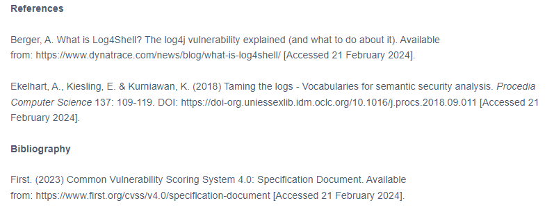
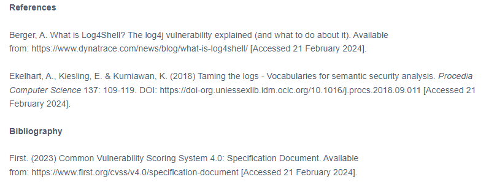
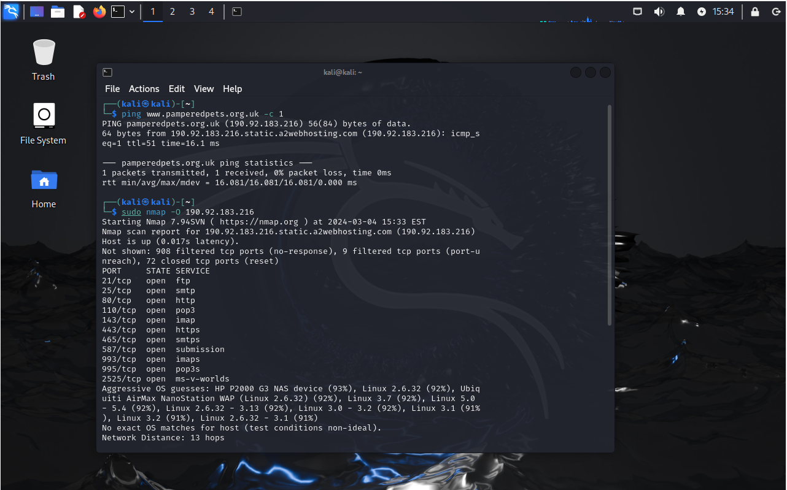

Week 4
The Pros and Cons of Logging - The Impact of log4j
The first task of this week was to discuss two articles related to logging for security analysis and issues of log-related exploits. I still believe logging tools are useful. These were my thoughts below:
 

Yahoo's Breach - A Case Study
For the second task of the week, I chose to analyse Yahoo's 2014 breach, where information about 3 billion Yahoo users was leaked. I looked at the technical details and social response, discussing with my peers the response and possible mitigations too. Thing's like 2FA might have stopped attackers being able to escalate privileges and gain unauthorised access to information. 2FA wasn't a convention in security at the time of the Yahoo breach though, despite 2FA not being impossible to implement.
Unfortunately the Yahoo breach is controversial, due to the fact that it wasn't reported until 2 years after it happened. This decision resulted in fines from organisations such as the ICO, but it was a relatively small fine, and Yahoo was still able to sell itself to Verizon at a discount, offsetting irresponsibility. Shockingly, Yahoo users didn't recieve compensation despite having their data stolen.
Network Diagnostics
This week I discovered more information about the website that I had previously proposed a vulnerability audit and assessement for, during week 3. I was able to discover information about the website fairly easily, including the operating system of the webserver, which ports were open, what server software was likely to be running, the content management system, and some of the protections in place. I didn't expect these tools to be as easy as they are to use. I enjoyed this task alot and will continue to learn more about network diagnostic tools for my own personal network security. Professionally, I think these tools are also extremely valuable.
